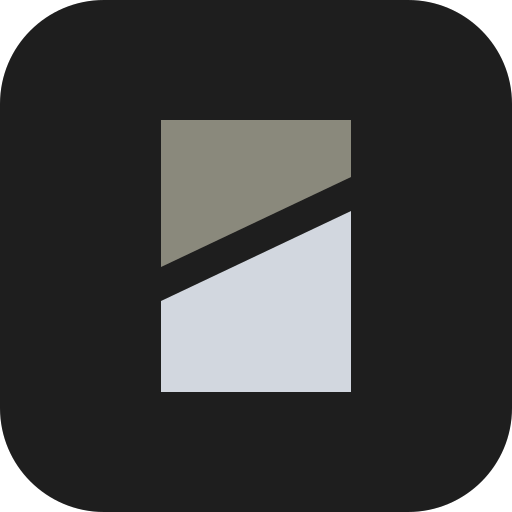
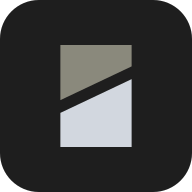
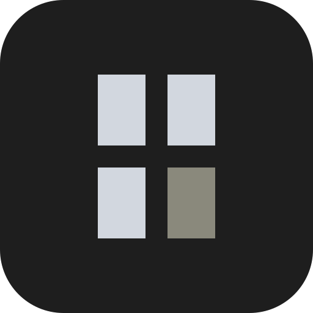
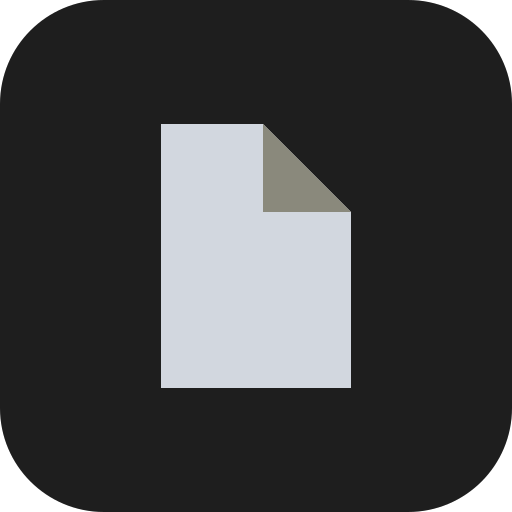
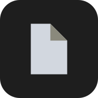
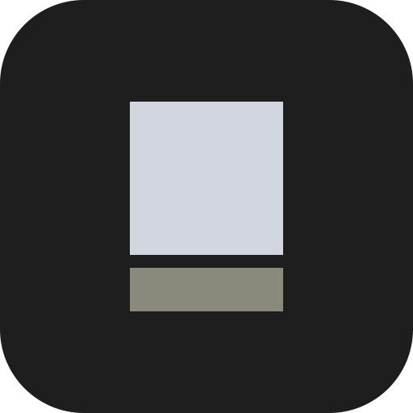
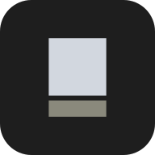
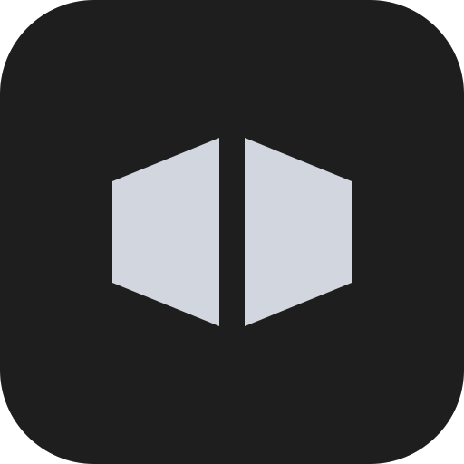
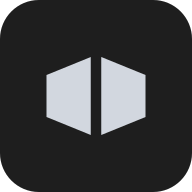

01
Split Page
A page cut by a wide diagonal seam, the lifted half in sage.

96 px
24 px actual
mono 24

circle mask01-split-page.svg · 01-split-page-mono.svg
Manga Loader / icon concepts
Flat vector only: plate, mark and one sage accent. Each colour icon keeps its mark inside the Android adaptive safe zone; each mono mark is a 24 × 24 notification glyph, white on transparent.
The only concept that says manga rather than reading in general. Four blocks survive every reduction, the gutters are real gaps instead of hairlines, and the symmetric silhouette is safe under a circle or squircle mask. The sage panel is the single accent. Runner-up: 01 Split Page for a less literal, more surface-like mark.
A page cut by a wide diagonal seam, the lifted half in sage.


circle mask01-split-page.svg · 01-split-page-mono.svg
Four manga panels in a 2 × 2 grid, the last one in sage.

02-panel-grid.svg · 02-panel-grid-mono.svg
A bookmark with an off-centre bottom notch, so the short prong reads as a speech-bubble tail.
03-bookmark.svg · 03-bookmark-mono.svg
Three books on a shelf, the right one leaning.
04-shelf.svg · 04-shelf-mono.svg
A page with its top-right corner turned down; the turned flap is sage.


circle mask05-corner-fold.svg · 05-corner-fold-mono.svg
A page whose last strip is detached as a reading-progress bar.


circle mask06-progress-page.svg · 06-progress-page-mono.svg
Two hard-edged pages meeting at a plate-coloured fold, no page curves.


circle mask07-open-spread.svg · 07-open-spread-mono.svg
An L-shaped panel with a smaller sage panel set into its cut corner.
08-panel-inset.svg · 08-panel-inset-mono.svg